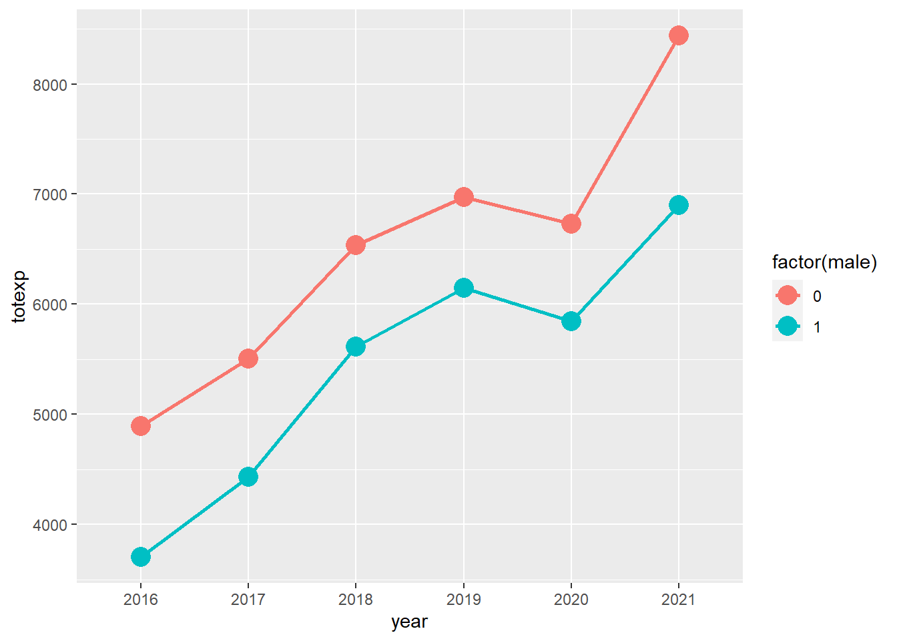
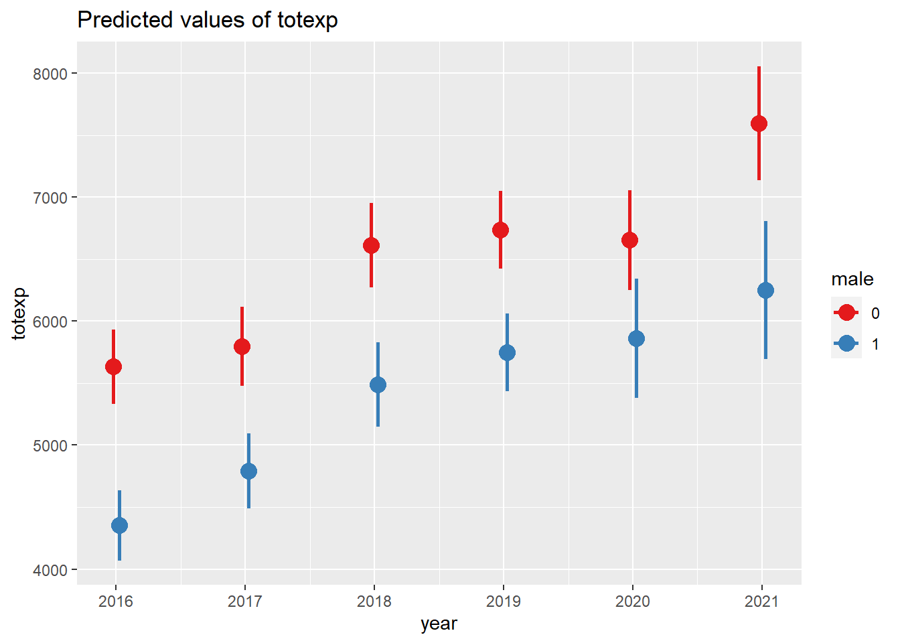
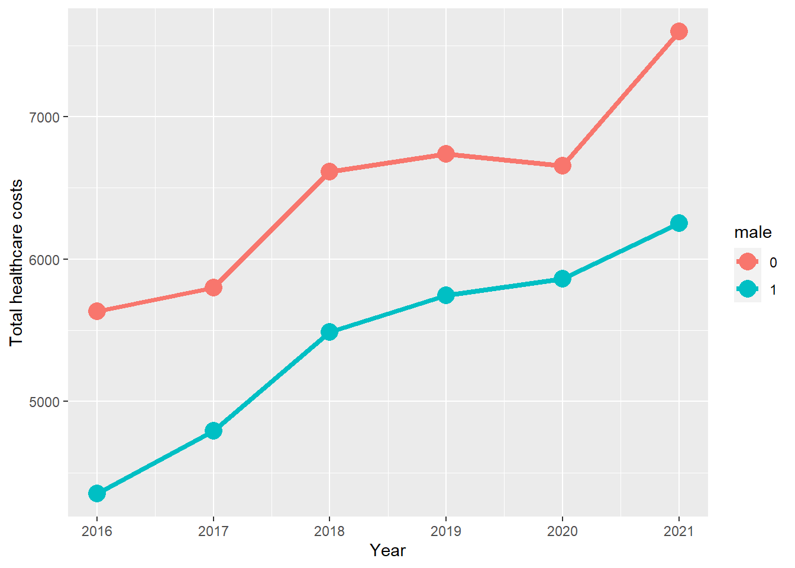

Chapter 5 Simple trend analysis with linear models
5.1 Introduction
Analyzing trends can be a tricky matter. You have to consider many things such as the autoregressive correlation between values across the time interval or the seasonal effects that occur and are unrelated to the risk factor. All these issues contribute to the difficulty and challenge of trend analysis. However, there are simple ways to perform rudimentary trend analysis with linear models that might be useful for most stakeholders.
Linear models are useful because they are easy to interpret. There is no re-transformation needed, and the outputs are interpreted in terms of real units. Non-linear models may require re-transformation or some kind of adjustment to get the \(\beta\) coefficients to be interpretable in real units.
Although there are a lot of different models that take into consideration the strength of the correlation between values across time (e.g., generalized estimating equation models) or the random slope and intercepts of subjects and groups, we will use the linear effects model to interpret the trends of healthcare expenditure of a representative sample of the US non-institutionalized patients.
5.2 Motivating example
We will use data from the Agency for Healthcare Research and Quality (AHRQ) Medical Expenditure Panel Survey (MEPS) data from 2016 to 2021. We will use R to perform the simple trend analysis.
5.2.1 Loading the libraries
There are several libraries that we’ll need to install and then load.
### step 1a: Load the MEPS package
library("MEPS") ## You need to load the library every time you restart R
### Step 1b: Load the other libraries
library("survey")
library("foreign")
library("dplyr")
library("ggplot2")
library("questionr") # remotes::install_github("juba/questionr")
library("lspline") # devtools::install_github("mbojan/lspline", build_vignettes=TRUE)
library("ggeffects") # remotes::install_github("strengejacke/ggeffects")
library("margins")
library("gtsummary") # remotes::install_github("ddsjoberg/gtsummary")
library("sjPlot") # plot marginal effects ("plot_model" function)5.2.2 Loading data into the R environment
There are two ways to load the data onto the R environment from AHRQ MEPS.
# There are two ways to load data from AHRQ MEPS website:
#### Method 1: Load data from AHRQ MEPS website
hc2021 = read_MEPS(file = "h233")
hc2020 = read_MEPS(file = "h224")
hc2019 = read_MEPS(file = "h216")
hc2018 = read_MEPS(file = "h209")
hc2017 = read_MEPS(file = "h201")
hc2016 = read_MEPS(file = "h192")
#### Method 2: Load data from AHRQ MEPS website
hc2021 = read_MEPS(year = 2021, type = "FYC")
hc2020 = read_MEPS(year = 2020, type = "FYC")
hc2019 = read_MEPS(year = 2019, type = "FYC")
hc2018 = read_MEPS(year = 2018, type = "FYC")
hc2017 = read_MEPS(year = 2017, type = "FYC")
hc2016 = read_MEPS(year = 2016, type = "FYC")Once the data have been loaded onto R, we can made some edits. The first edit I make is ensure that all column or variable names are in lower case.
## Change column names to lowercase
names(hc2021) <- tolower(names(hc2021))
names(hc2020) <- tolower(names(hc2020))
names(hc2019) <- tolower(names(hc2019))
names(hc2018) <- tolower(names(hc2018))
names(hc2017) <- tolower(names(hc2017))
names(hc2016) <- tolower(names(hc2016))5.2.3 Download the linkage file
Next, we need to download the pooled linkage file. This has the updated primary sampling unit and strata for the individual respondents. This is an important file because when we pool MEPS data from different years, the primary sampling unit and strata will change. We will need to merge this with our pooled data eventually, which will be discussed later in the tutorial.
# We need the linkage file with the appropriate stratum of the primary sampling strata (STRA9621) and primary sampling unit (PSU9621). (Note: Each year, the linkage file sampling unit name changes)
linkage = read_MEPS(type = "Pooled linkage")
names(linkage) <- tolower(names(linkage)) # change variable name to lower case5.2.4 Creating the pooled data file
Now that we have the Full-Year Consolidated files from 2016 to 2021 and the pooled linkage files loaded onto the R environment, we can being to clean the data and merge them together.
We’ll start by keeping only those variables that will be needed for our analysis. These include the following variables:
dupersid: The unique identifier of the individual respondentpanel: The panel when the individual entered the MEPS roundvarstr: The individual sampling stratavarpsu: The individual primary sampling unitsex: The sex variable (1 = MALE, 2 = FEMALE)totexp: The total healthcare costs per individual per year (Note: This variable name was changed from the year-specific total expenditure (e.g.,totexp17ftototexpbecause we are pooling from multiple years)perwt: The person weight for the individual in the sample (Note: This variable name was changed from the year-specific person weight (e.g.,perwt7f) toperwtbecause we are pooling from multiple years)
We also created an indicator variable year to reflect the year the Full-Year Consolidated file was captured.
When we merge all the data, we created a new variable poolwt where we divide the perwt by the number of years used in the pooled data (e.g., 6). This will generate a new individual person weight with the pooled data.
Note: For more instruction and information about pooling multiple years with MEPS data, please see the 1996-2015 Pooled Linkage Variance Estimation File. This document provides a good summary and documentation on creating a poolwt variable and using the pooled strata and primary sampling unit.
# Select specific variables
### 2021
hc2021p = hc2021 %>%
rename(
perwt = perwt21f,
totexp = totexp21) %>%
select(
dupersid,
panel,
varstr,
varpsu,
perwt,
sex,
totexp)
hc2021p$year <- 2021
### 2020
hc2020p = hc2020 %>%
rename(
perwt = perwt20f,
totexp = totexp20) %>%
select(
dupersid,
panel,
varstr,
varpsu,
perwt,
sex,
totexp)
hc2020p$year <- 2020
### 2019
hc2019p = hc2019 %>%
rename(
perwt = perwt19f,
totexp = totexp19) %>%
select(
dupersid,
panel,
varstr,
varpsu,
perwt,
sex,
totexp)
hc2019p$year <- 2019
### 2018
hc2018p = hc2018 %>%
rename(
perwt = perwt18f,
totexp = totexp18) %>%
select(
dupersid,
panel,
varstr,
varpsu,
perwt,
sex,
totexp)
hc2018p$year <- 2018
### 2017
hc2017p = hc2017 %>%
rename(
perwt = perwt17f,
totexp = totexp17) %>%
select(
dupersid,
panel,
varstr,
varpsu,
perwt,
sex,
totexp)
hc2017p$year <- 2017
### 2016
hc2016p = hc2016 %>%
rename(
perwt = perwt16f,
totexp = totexp16) %>%
select(
dupersid,
panel,
varstr,
varpsu,
perwt,
sex,
totexp)
hc2016p$year <- 2016
# Merge data and adjust the person weight by 6 years
pool_data = bind_rows(hc2021p,
hc2020p,
hc2019p,
hc2018p,
hc2017p,
hc2016p) %>%
mutate(poolwt = perwt / 6)5.2.5 Merging with pooled survey primary sampling strata and unit
Next, we need to merge the pooled years file with the updated primary sampling strata and unit from the linkage file. The linkage file is updated every year. Since the latest Full-Year Consolidated Data file that we are using includes 2021, we are using the 2021 linkage file (HC-229I).
We first limit the linkage file to only include the following variables:
dupersid: The unique identifier for the individual respondent (Note: We will need this to merge the files later)panel: The panel when the individual entered the MEPS round (Note: We will need to use this to merge the files later)stra9621: The pooled sampling stratapsu9621: The pooled primary sampling unit
# Reduce the linkage file to only include dupersid, panel, stra9621, psu9621
linkage_file = linkage %>%
select(dupersid, panel, stra9621, psu9621)
# Merge link file with main data
pool_data_linked = left_join(pool_data,
linkage_file,
by = c("dupersid", "panel"))5.2.6 Create factor variables
We need to create factor variables so that we can evaluate the marginal effects. Disclaimer: I’m not sure if this is always necessary. However, I run into issues with the margins package when I estimated the average marginal effects in R. I get errors about the size of the dimension or vector, which indicates that the dimensions of the dataframe is not correct. I’m not sure why this error occurs, but I seem to have avoided it when I convert my categorical variables into factors. I’m not sure if this is a bug in the margins package or something I did with the terms in the regression model, but I’ll monitor and update this tutorial if there are any changes or discoveries. For now, we’ll convert our categorical variables into factors. Here, I also convert the variable year into a factor.
# Create factor variables:
### MALE
pool_data_linked$male[pool_data_linked$sex == 1] = 1
pool_data_linked$male[pool_data_linked$sex == 2] = 0
table(pool_data_linked$male)##
## 0 1
## 95023 86626pool_data_linked$male <- factor(pool_data_linked$male, levels = c(0, 1))
class(pool_data_linked$male)## [1] "factor"levels(pool_data_linked$male)## [1] "0" "1"### YEAR
pool_data_linked$year <- factor(pool_data_linked$year, levels = c(2016, 2017, 2018, 2019, 2020, 2021))
class(pool_data_linked$year)## [1] "factor"levels(pool_data_linked$year)## [1] "2016" "2017" "2018" "2019" "2020" "2021"5.2.7 Set the survey options
Next, we set the survey options so that we can estimate the survey-weighted values for our population.
################################# SURVEY #################################
# Set the survey options
options(survey.lonely.psu = "adjust")
options(survey.adjust.domain.lonely = TRUE)
# Define the survey design
survey_design = svydesign(
id = ~psu9621,
strata = ~stra9621,
weights = ~poolwt,
data = pool_data_linked,
nest = TRUE)5.2.8 Trend analysis - Plot the total healthcare costs by sex across time
We can look at the total healthcare costs totexp by sex across time year with the ggsurvey function, which is part of the questionr package.
Visualizing the trends, females have a higher average total healthcare costs compared to males, and these are increasing across time. (Note: This trend was generated with the survey weights.)
################################ TREND ANALYSIS ################################
# Plot total expenditures over time (Load the "questionr" package to use "ggsurvey")
ggsurvey(survey_design) +
aes(x = year, y = totexp, group = factor(male), color = factor(male)) +
stat_summary(fun = "mean", geom = "point", size = 5) +
stat_summary(fun = "mean", geom = "line", size = 1) 
5.2.9 Regression model
We construct a linear regression model using the svyglm function in R. We included the terms sex and year, and we included an interaction term sex:year. This interaction term provides the estimates that describe the differences in the healthcare total costs between males and females when the years changes.
# Survey-weight GLM model with interaction term
survey_model <- svyglm(totexp ~ factor(male) + factor(year) + factor(male):factor(year), survey_design)We can view the estimates with their corresponding 95% confidence intervals (CIs).
# Summary table with 95% CI
round(
cbind(
summary(survey_model, df.resid = degf(survey_model$survey.design))$coef,
confint(survey_model, df = degf(survey_model$survey.design))
), 4)## Estimate Std. Error t value Pr(>|t|)
## (Intercept) 5632.6497 153.3156 36.7389 0.0000
## factor(male)1 -1280.8517 183.1791 -6.9923 0.0000
## factor(year)2017 164.5324 200.4297 0.8209 0.4121
## factor(year)2018 981.6884 231.2365 4.2454 0.0000
## factor(year)2019 1103.9018 220.8327 4.9988 0.0000
## factor(year)2020 1022.3480 255.6661 3.9988 0.0001
## factor(year)2021 1964.5098 279.9440 7.0175 0.0000
## factor(male)1:factor(year)2017 276.5807 250.6373 1.1035 0.2704
## factor(male)1:factor(year)2018 154.8177 277.8425 0.5572 0.5776
## factor(male)1:factor(year)2019 291.3151 276.8655 1.0522 0.2932
## factor(male)1:factor(year)2020 487.1318 353.7995 1.3769 0.1692
## factor(male)1:factor(year)2021 -65.6524 403.7881 -0.1626 0.8709
## 2.5 % 97.5 %
## (Intercept) 5331.3906 5933.9088
## factor(male)1 -1640.7914 -920.9121
## factor(year)2017 -229.3041 558.3688
## factor(year)2018 527.3179 1436.0589
## factor(year)2019 669.9743 1537.8294
## factor(year)2020 519.9744 1524.7217
## factor(year)2021 1414.4311 2514.5886
## factor(male)1:factor(year)2017 -215.9115 769.0730
## factor(male)1:factor(year)2018 -391.1317 700.7671
## factor(male)1:factor(year)2019 -252.7145 835.3448
## factor(male)1:factor(year)2020 -208.0701 1182.3338
## factor(male)1:factor(year)2021 -859.0800 727.7751A nicer way of presenting the regression model output is with the tbl_regression function from the gtsummary package.
# Use gtsummary to generate a clean summary table.
survey_model %>%
tbl_regression(intercept = FALSE,
estimate_fun = function(x) style_sigfig(x, digits = 3),
pvalue_fun = function(x) style_sigfig(x, digits = 3)) %>%
modify_caption("Survey-weighted linear regression")| Characteristic | Beta | 95% CI1 | p-value |
|---|---|---|---|
| factor(male) | |||
| 0 | — | — | |
| 1 | -1,281 | -1,641, -921 | 0.000 |
| factor(year) | |||
| 2016 | — | — | |
| 2017 | 165 | -229, 558 | 0.412 |
| 2018 | 982 | 527, 1,436 | 0.000 |
| 2019 | 1,104 | 670, 1,538 | 0.000 |
| 2020 | 1,022 | 520, 1,525 | 0.000 |
| 2021 | 1,965 | 1,414, 2,515 | 0.000 |
| factor(male) * factor(year) | |||
| 1 * 2017 | 277 | -216, 769 | 0.270 |
| 1 * 2018 | 155 | -391, 701 | 0.578 |
| 1 * 2019 | 291 | -253, 835 | 0.293 |
| 1 * 2020 | 487 | -208, 1,182 | 0.169 |
| 1 * 2021 | -65.7 | -859, 728 | 0.871 |
| 1 CI = Confidence Interval | |||
From these findings, we can make several interpretations.
The most important estimates are the interaction terms. These provide the estimation or the change in healthcare total costs between males and females due to an increase in the year. For instance, the interaction term factor(male)1:factor(year)2017 is interpreted as the average difference in the change in total healthcare costs between males and females when the year increased from 2016 to 2017. This difference in the changes in total healthcare costs between males and females is $276.58 (95% CI: -$215.91, $769.07), which was not statistically significant.
5.2.10 Average marginal effects between males and females at each year
We can generate the average marginal effects or the differences in total healthcare costs between males and females at each year using the margins function.
For instance, the difference in total healthcare costs between males and females in 2019 was -$990; 95% CI: -$1,396, -$583, which was statistically significant. This means that males had lower average total healthcare costs compared to females in 2019.
# Equivalent to Stata's margin, dydx(year), at(male = 0:1)
margins1 <- margins(survey_model, type = "response", design = survey_design, at = list(year = c(2016, 2017, 2018, 2019, 2020, 2021)), variables = "male")
summary(margins1)## factor year AME SE z p lower upper
## male1 2016.0000 -1280.8517 183.1789 -6.9924 0.0000 -1639.8757 -921.8278
## male1 2017.0000 -1004.2710 188.0103 -5.3416 0.0000 -1372.7644 -635.7776
## male1 2018.0000 -1126.0341 208.9060 -5.3901 0.0000 -1535.4823 -716.5859
## male1 2019.0000 -989.5366 207.6048 -4.7664 0.0000 -1396.4346 -582.6386
## male1 2020.0000 -793.7199 302.6867 -2.6222 0.0087 -1386.9749 -200.4649
## male1 2021.0000 -1346.5042 359.8470 -3.7419 0.0002 -2051.7913 -641.21705.2.11 Average marginal effects between years for males and females
Alternatively, we can estimate the average marginal effects or the changes in total healthcare costs between years for males and females.
For instance, in 2021, males had an average total healthcare cost of $1965; 95% CI: $1,416, $2,513, and females had an average total healthcare cost of $1,899; 95% CI: $1277, $2521.
# Equivalent to Stata's margin, dydx(year), at(male = 0:1)
margins2 <- margins(survey_model, type = "response", design = survey_design, at = list(male = 0:1), variables = "year")
summary(margins2)## factor male AME SE z p lower upper
## year2017 0.0000 164.5324 200.4294 0.8209 0.4117 -228.3021 557.3669
## year2017 1.0000 441.1131 190.2654 2.3184 0.0204 68.1998 814.0265
## year2018 0.0000 981.6884 231.2367 4.2454 0.0000 528.4728 1434.9040
## year2018 1.0000 1136.5061 225.5083 5.0398 0.0000 694.5180 1578.4942
## year2019 0.0000 1103.9018 220.8324 4.9988 0.0000 671.0782 1536.7254
## year2019 1.0000 1395.2170 213.9435 6.5214 0.0000 975.8953 1814.5386
## year2020 0.0000 1022.3480 255.6657 3.9988 0.0001 521.2525 1523.4436
## year2020 1.0000 1509.4799 283.0927 5.3321 0.0000 954.6284 2064.3314
## year2021 0.0000 1964.5098 279.9436 7.0175 0.0000 1415.8305 2513.1891
## year2021 1.0000 1898.8574 317.1989 5.9863 0.0000 1277.1590 2520.55585.2.12 Plot the average marginal effects
We can plot the average marginal effects between males and females across time year. We can visualize the average total healthcare costs for males and females at each year from 2016 to 2021.
# Plot the marginal effects
plot_model(survey_model, type = "pred", terms = c("year", "male"), dot.size = 4., line.size = 1)
We could also plot the average marginal effects using ggplot2 with the ggpredict package.
# Plot the predicted values
fit.dataframe <- ggpredict(survey_model, terms = c("year", "male"), design = survey_design)
ggplot(fit.dataframe, aes(x, predicted, colour = group)) +
geom_line(size = 1.5) +
geom_point(size = 5) +
labs(
x = "Year",
y = "Total healthcare costs",
colour = get_legend_title(fit.dataframe)
)
There are a few important things to plot with these figures.
In the first figure below, we see that the slopes or change in average total healthcare costs across the years are displayed for the males and females. The output from the margins function provides us with the within group change in total healthcare costs for males and females across time. For instance, the change from 2016 to 2017 for females (which is also called the slope between 2016 and 2017) was $165. For males, their slope was $441.

Figure 5.1: Average marginal effects or the Slopes of males and females.
In the second figure, we can use the output from the margins1 object to estimate the difference in total healthcare costs at each year between males and females. For instance, we can visualize the difference in total healthcare costs at 2019 between males and females is -$990.

Figure 5.2: Differences in total healthcare costs between males and females in 2019.
The last figure is the most important. This visualizes the interaction term results. We are mostly interested in the interaction terms for trend analysis. The interaction terms tell us the differences in the total healthcare costs between males and females as the year changes (2016 to 2018).
For instance, the slope change for females between 2018 and 2016 was approximately $981. The slope change for males between 2018 and 2016 was $1136. The difference between these two slope changes for males and females is $1136 - $981 = $155. This is our difference in the changes estimation, or we can state that this is the differences in total healthcare costs between males and females as the year changed from 2016 to 2018. But, this was not statistically significant since the 95% CI includes zero (95% CI: -$391, $701).

Figure 5.3: Interaction terms - difference in the changes between males and females when year increased from 2016 to 2018.
5.3 Conclusions
Trend analysis can be performed using linear models. The ease of interpretation and simple execution makes this ideal for most stakeholders. Moreover, the svyglm function allows us to incorporate the survey weights from the complex survey design of MEPS to generate standard errors that were representative of the general U.S. population. Although the margins package is helpful in estimating the average marginal effects, there are other alternatives such as the marginaleffects package.
Additionally, more complex models exist that account for autoregressive correlations and more precise estimations of the variance. However, they are harder to implement with complex survey designs. Unfortunately, I have not been able to figure out how to perform some of these more complex longitudinal data analysis with alternative models (e.g., linear mixed effects models) that incorporate the survey weights. For these scenarios, I prefer to use Stata, which makes it convenient to apply survey weights in more complex models. Perhaps, I’ll create some tutorials using Stata for these more complex longitudinal models in the future.
5.4 Acknowledgements
I am grateful to the author of the margins package, Thomas J. Leeper. You can find his margins package on his GitHub site.
Additionally, the marginaleffects package by Vincent Arel-Bundock has helped me to compare some of R’s marginal effects commands with Stata. You can find his GitHub site here.